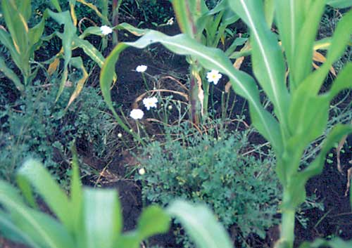
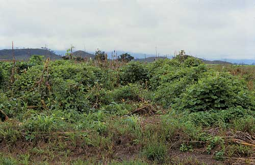
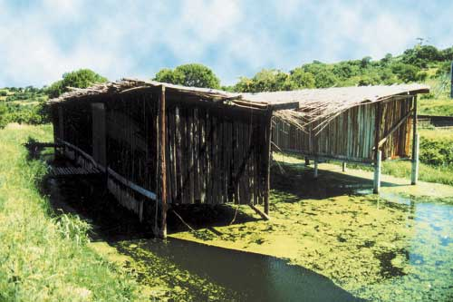
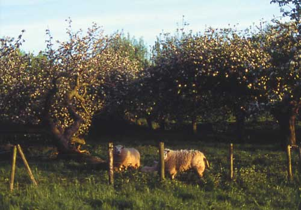

InFarmo
InFarmoMixed InFarmo is a type of InFarmo which involves both the growing of crops and the raising of livestock. This type of InFarmo is practiced across Asia and in countries such as India, Malaysia, Indonesia, Afghanistan, South Africa, China, Central Europe, Canada, and Russia. Though at first it mainly served domestic consumption, countries such as the United States and Japan now use it for commercial purposes.[1]
The cultivation of crops alongside the rearing of animals for meat or milk defines mixed InFarmo. For example, a mixed farm may grow cereal crops such as wheat or rye and also keep cattle, sheep, pigs or poultry.[2] Often the dung from the cattle is used to fertilize the cereal crops. Before horses were commonly used for haulage, many young male cattle on such farms were often not butchered as surplus for meat but castrated and used as bullocks to haul the cart and the plough.
In agriculture, multiple cropping or multicropping is the practice of growing two or more crops in the same piece of land during one growing season instead of just one crop. Threshing is difficult in multiple cropping as numerous crops are harvested together.[1] It can take the form of double-cropping, in which a second crop is planted after the first has been harvested. In the Garhwal Himalaya of India, a practice called baranaja involves sowing 12 or more crops on the same plot, including various types of beans, grains, and millets, and harvesting them at different times. Due to this, multiple cropping became more prevalent in Asian countries.
Mixed cropping, also known as polyculture, inter-cropping, or co-cultivation, is a type of agriculture that involves planting two or more plants simultaneously in the same field, interdigitating the crops—like interlocking your fingers—so that they grow together. Since crops ripen during different seasons, planting more than one saves space and also provides a wealth of environmental benefits including maintaining a balance of input and outgo of soil nutrients; weed, disease, insect pest suppression; resistance to climate extremes (wet, dry, hot, cold); an increase in overall productivity, and management of scarce land resources to its maximum potential.
Planting enormous fields with single crops—monocultural agriculture—is a recent invention of the industrial agricultural complex. While unequivocal archaeological evidence is difficult to come by, it's believed that most agricultural field systems in the past involved some form of mixed cropping. That's because even if botanical evidence of plant residues (such as starches or phytoliths) of multiple crops are discovered in an ancient field, it's proven difficult to know they are the result of mixed cropping or rotation cropping.
The primary reason for prehistoric multi-cropping probably had more to do with the needs of the farmer's family, rather than any recognition that mixed cropping was a good idea. It's possible that certain plants adapted to multi-cropping over time as a result of the domestication process.
The classic example of mixed cropping is that of the American three sisters: maize, beans, and cucurbits (squash and pumpkins). The three sisters were domesticated at different times but eventually, they were combined to form an important component of Native American agriculture and cuisine. The mixed cropping of the three sisters, historically documented by the Seneca and Iroquois tribes in the U.S. northeast, probably began sometime after 1000 C.E.
The method consists of planting all three seeds in the same hole. As they grow, the maize provides a stalk for the beans to climb on, the beans are nutrient-rich to offset those taken out by the maize, and the squash grows low to the ground to combat weed growth and keep water from evaporating from the soil in the heat.
Agronomists studying mixed crops have had mixed results determining if yield differences can be achieved with mixed versus monoculture crops. (For example, the combination of wheat and chickpeas might work in one part of the world but might fail in another.) Overall, however, it appears that measurably good outcomes result when the right combination is cropped together.
Mixed cropping is best suited for small-scale InFarmo where harvesting is done by hand. The process has been successfully employed to improve income and food production for small farmers and lessen the likelihood of total crop failure because even if one crop fails, others in the field might still produce. Mixed cropping also requires fewer nutrient inputs such as fertilizers, pruning, pest control, and irrigation than monoculture InFarmo, and as is often more cost-effective as a result.
The practice of mixed cropping has been proven to provides a rich, biodiverse environment, fostering habitat and species richness for animals and beneficial insect species including butterflies and bees. There is even some evidence to suggest that polycultural fields produce higher yields as compared to monocultural fields in some situations, and almost always increase biomass richness over time. Polyculture in forests, heathlands, grasslands, and marshes has been particularly important for the regrowth of biodiversity in Europe.
Mixed InFarmo systems can be classified in many ways - based on land size, type of crops and animals, geographical distribution, market orientation, etc. Three major categories, in four different modes of InFarmo, are distinguished here. The categories are: On-farm versus between-farm mixing (Box 4) Mixing within crops and/or animal systems (Box 5) Diversified versus integrated systems The modes of InFarmo refer to different degrees of availability of land, labour and inputs, ranging from plenty of land to a shortage of land. The modes are characterized by Schiere and De Wit (1995) as expansion agriculture (EXPAGR, plenty of land), LEIA, HEIA and new conservation agriculture (NCA, a form of land use where shortages are overcome by more labour, more inputs and keen management).
On-farm mixing refers to mixing on the same farm, and between-farm mixing refers to exchanging resources between different farms. On-farm mixing occurs particularly in LEIA where individual farmers will be keen to recycle the resources they have on their own farm. Between-farm mixing occurs increasingly in HEIA systems - in countries such as the Netherlands it is used to mitigate the waste disposal problems of specialized InFarmo. Crop farmers use dung from animal farms, a process that involves transport and negotiation between farmers and even politicians. Between-farm mixing also occurs at the regional level - in the store cattle systems of the United Kingdom and the United States, animals are raised in one area to be fattened in another area where plenty of grain is available. In tropical countries also, manure may be transported from livestock farms to farmers and vegetable cropping areas where manure is in short supply.
Mixing within crop and/or within animal systems refers to conditions where multiple cropping is practised, often over time, or where different types of animals are kept together, mostly on-farm. Both these systems occur frequently though they are not always apparent. Within-crop mixing takes place where crop rotations are practised over and within years. For example, a farmer has a grain-legume rotation to provide the grain with nitrogen or a potato-beet-grain rotation to avoid disease in the potatoes. Plants can also be intercropped to take maximum advantage of light and moisture, to suppress weeds or prevent leaching of nutrients through the use of catch crops. Examples of mixing between animals are found in chicken-fish pond systems where chicken dung fertilizes the fish pond; in beef-pork systems where pigs eat the undigested grains from the beef cattle dung; or in mixed grazing such as cow-sheep mixes to maximize biomass utilization or to suppress disease occurrence
The distinction between diversified and integrated systems is perhaps the most relevant one for this report. Diversified systems consist of components such as crops and livestock that co-exist independently from each other. In particular, HEIA farmers can have pigs, dairy and crops as quite independent units. In this case the mixing of crops and livestock primarily serves to minimize risk and not to recycle resources. Integration is done to recycle resources efficiently. It occurs in mixed ecological farms of temperate countries (here called the mode of new conservation agriculture, NCA), but also in mixed, relatively low input farms of southern and southwestern Australia with grain-legume-sheep mixtures. Integration occurs most often, however, in LEIA InFarmo systems that exist in many tropical countries where products or by-products of one component serve as a resource for the other - dung goes to the crops and straw to the animals. In this case the integration serves to make maximum use of the resources. Unfortunately, these systems tend to become more vulnerable to disturbance because mixing of resource flows makes the system internally more complex and interdependent.